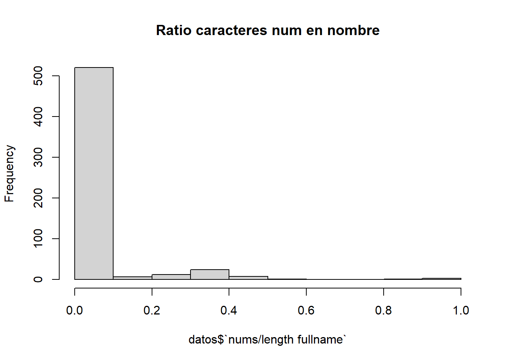
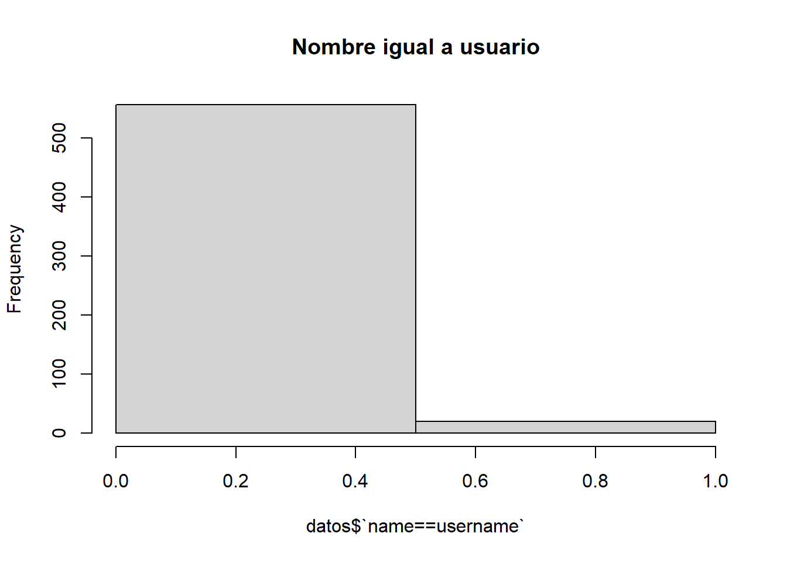
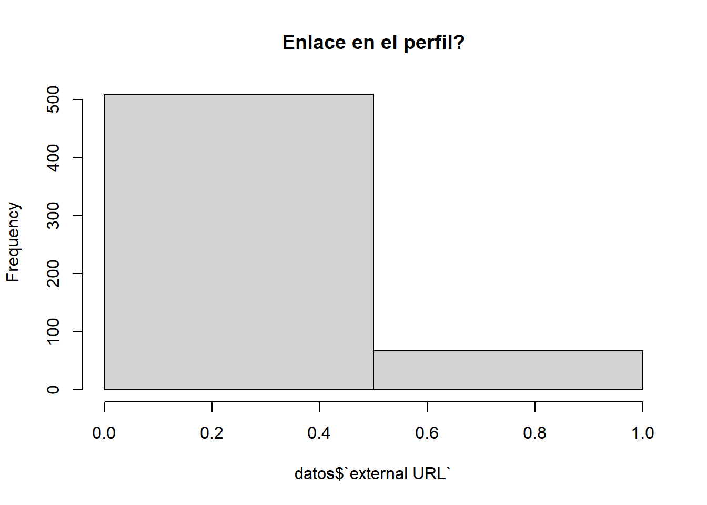
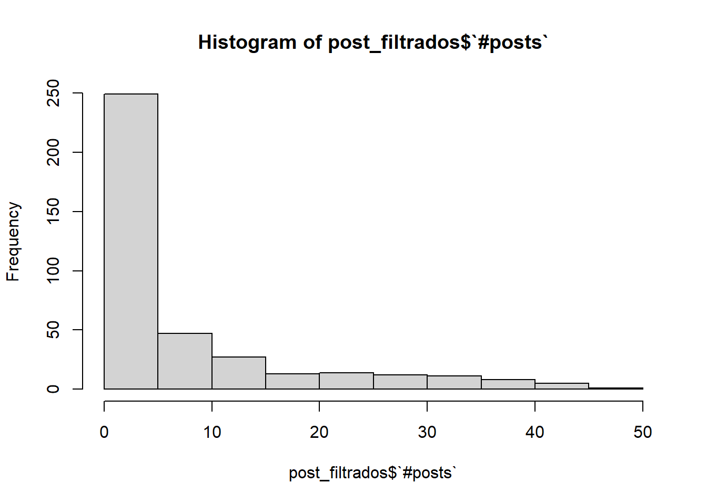
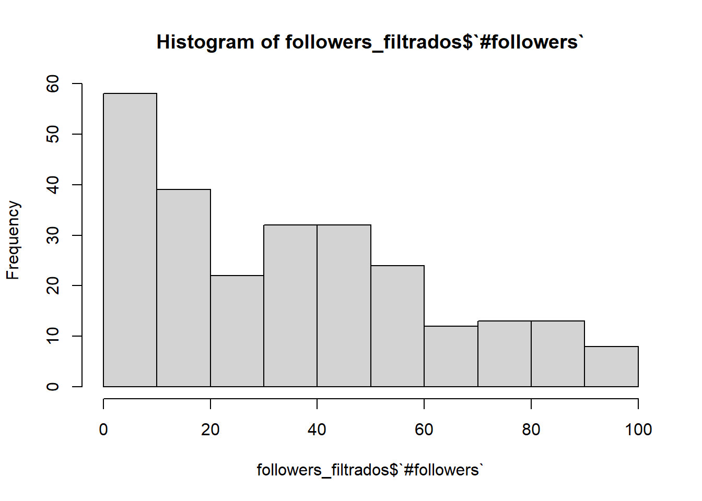
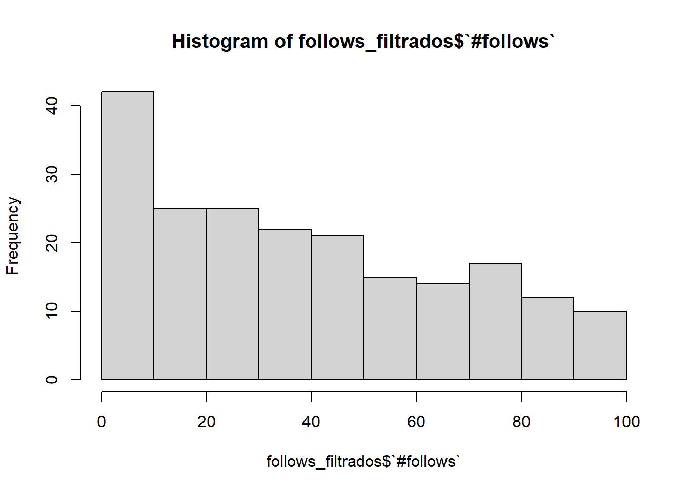
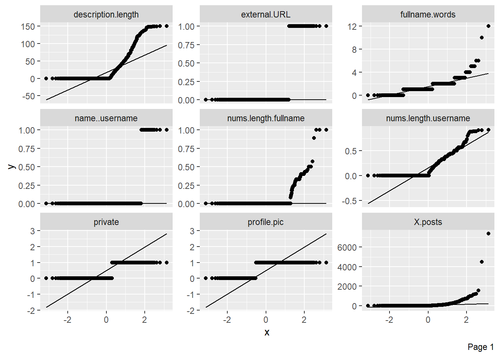

El análisis exploratorio de datos consiste en analizar el conjunto o conjuntos de datos de entrada con el objetivo de resumir sus características principales ayudando a su comprensión para futuras técnicas. Es una fase crucial en la ciencia de datos, ya que ayuda a los analistas de datos a comprender mejor los datos antes de aplicar modelos estadísticos más complejos o herramientas más sofisticadas.
Para realizar dicho análisis, vamos a utilizar el meta-package de tidyverse.
1.1 Carga de datos
Como hemos visto anteriormente, el dataset contiene dos archivos con datos. Sin embargo, puesto que el archivo train.csv contiene más entradas de datos, vamos a utilizar dicho conjunto de datos para aplicar nuestras técnicas de análisis.
En primer lugar, vamos a cargar las librerías necesarias y los datos:
library(tidyverse)
── Attaching core tidyverse packages ──────────────────────── tidyverse 2.0.0 ──
✔ dplyr 1.1.4 ✔ readr 2.1.5
✔ forcats 1.0.0 ✔ stringr 1.5.1
✔ ggplot2 3.5.0 ✔ tibble 3.2.1
✔ lubridate 1.9.3 ✔ tidyr 1.3.1
✔ purrr 1.0.2
── Conflicts ────────────────────────────────────────── tidyverse_conflicts() ──
✖ dplyr::filter() masks stats::filter()
✖ dplyr::lag() masks stats::lag()
ℹ Use the conflicted package (<http://conflicted.r-lib.org/>) to force all conflicts to become errors
library(readr) datos <-read_csv("Data/train.csv")
Rows: 576 Columns: 12
── Column specification ────────────────────────────────────────────────────────
Delimiter: ","
dbl (12): profile pic, nums/length username, fullname words, nums/length ful...
ℹ Use `spec()` to retrieve the full column specification for this data.
ℹ Specify the column types or set `show_col_types = FALSE` to quiet this message.
Una vez tenemos nuestros datos, podemos ponernos manos a la obra.
Vamos a comenzar ojeando cuántas filas tenemos:
nrow(datos)
[1] 576
Y también vemos cuantos atributos tiene cada fila y sus nombres:
Hemos comprobado que todos los valores son del tipo numérico y double.
anyNA(datos)
[1] FALSE
Por ultimo comprobamos que no existen valores NA dentro del dataset, lo que nos ayudara en su próximo análisis exploratorio.
1.2 Análisis de atributos
Una vez visto un poco por encima la estructura del dataset, vamos a explorar uno a uno los atributos de cada fila, explorando su significado, los valores límite, …
1.2.1 profile pic
Este es un atributo binario que indica si un usuario tiene foto de perfil. Por lo tanto, solo tenemos 0 o 1.
str(datos$`profile pic`)
num [1:576] 1 1 1 1 1 1 1 1 1 1 ...
anyNA(datos$`profile pic`)
[1] FALSE
Vemos que esta columna no contiene ningun NA.
Vamos a visualizar la proporcion de usuarios con foto de perfil:
hist(datos$`profile pic`, breaks =2, main="Fotos de perfil" )
Observamos que más de la mitad de los usuarios tienen foto de perfil.
1.2.2 nums/length username
Este atributo representa el ratio de número de caracteres numéricos en el nombre de usuario respecto a su longitud.
Por ejemplo: Ant234 -> Ratio 1.
hist(datos$`nums/length username`, main="Ratio caracteres num en usuario" )
1.2.3 fullname words
Este atributo representa la cantidad de palabras que componen el nombre del usuario.
max(datos$`fullname words`)
[1] 12
Observamos que hay uno o varios usuarios cuyo nombre tiene 12 palabras de longitud, algo que es poco común.
En concreto el 81,6% de los datos tienen entre 0 y 1 palabras en su nombre.
1.2.4 nums/length fullname
Este atributo representa el ratio de número de caracteres numéricos en el nombre completo del usuario respecto a su longitud.
hist(datos$`nums/length fullname`, main="Ratio caracteres num en nombre" )

Observamos que es bastante inusual que un usuario tenga caracteres en su nombre completo, mientras que, como hemos visto antes, en el nombre de usuario, es más frecuente encontrar caracteres.
1.2.5 name==username
Este atributo es un atributo binario que representa si el usuario tiene el mismo nombre de usuario y nombre completo.
hist(datos$`name==username`, breaks =2, main="Nombre igual a usuario" )

Concluimos que es bastante inusual que un usuario tenga el mismo nombre de usuario y nombre completo.
1.2.6 description length
Este atributo representa la longitud de la descripción del perfil de usuario (en caracteres).
hist(datos$`description length`, main="Num carateres de la descripcion" )
Podemos intuir que el máximo de caracteres que ofrece Instagram en su descripción es 150, cuyo límite es alcanzado por pocos usuarios del dataset.
filter(datos,datos$`description length`==150) %>%count() %>%summarise(`Num de usuarios`=n)
# A tibble: 1 × 1
`Num de usuarios`
<int>
1 2
Viendo el histograma, descubrimos que la mayoría de usuarios tienen una descripción con pocos caracteres, pero vamos a calcular la media para poder tener una idea:
mean(datos$`description length`)
[1] 22.62326
Encontramos que la media de caracteres en la descripción es relativamente baja, lo que, dependiendo del idioma, puede ser una pequeña frase o algunas palabras. Las descripciones largas son menos frecuentes.
1.2.7 external URL
Este atributo es un atributo binario que representa si el perfil tiene algún enlace externo en él.
hist(datos$`external URL`, breaks =2, main="Enlace en el perfil?" )

Lo mas común son los perfiles sin enlaces externos.
1.2.8 private
Este atributo es un atributo binario que representa si el perfil es privado o publico.
Como dato, la cuenta de Dwayne Johnson, ex-luchador de la WWE y exitoso actor de Hollywood, tiene alrededor de 7800 publicaciones, por lo que dicho valor puede ser debido a la cuenta de algún famoso.
Vamos a volver a dibujar el histograma pero con un umbral un poco más razonable:
post_filtrados <- datos %>%select(`#posts`)%>%filter(`#posts`<500)hist(post_filtrados$`#posts`)
Ahora ya podemos extraer información más fácilmente, como que la mayoría de usuarios tiene menos de 50 publicaciones. Vamos a verlo en más detalle:
post_filtrados <- datos %>%select(`#posts`)%>%filter(`#posts`<50)hist(post_filtrados$`#posts`)

Observamos que hay un gran número de usuarios con menos de 5 publicaciones. Vamos a ver cuántos de ellos tienen 0 publicaciones y a calcular la media total:
datos %>%filter(`#posts`==0) %>%count()
# A tibble: 1 × 1
n
<int>
1 157
mean(datos$`#posts`)
[1] 107.4896
Aunque como antes hemos visto que hay usuarios con un gran número de publicaciones, esta media puede no ser muy significativa.
Vamos a analizar entonces sus cuartiles y mediana:
summary(datos$`#posts`)
Min. 1st Qu. Median Mean 3rd Qu. Max.
0.0 0.0 9.0 107.5 81.5 7389.0
1.2.10 followers
Este atributo representa el numero de seguidores de la cuenta.
hist(datos$`#followers`, main="Numero de seguidores" )
max(datos$`#followers`)
[1] 15338538
Como en el atributo anterior, este histograma no tiene sentido porque hay algún valor muy alto.
max(datos$`#followers`)
[1] 15338538
Dicho valor solo tiene sentido que sea debido a una cuenta de alguna celebridad. Vamos a comprobar si es el mismo que tiene similitud con el valor anómalo de publicaciones encontrado anteriormente:
datos %>%filter (`#followers`==max(`#followers`)) %>%select(`#posts`)
# A tibble: 1 × 1
`#posts`
<dbl>
1 148
Aunque podría ser la cuenta de una celebridad, vemos que tiene un número de publicaciones relativamente normal, comparado con el valor de 7389 publicaciones que obtuvimos anteriormente.
Vamos a volver a hacer el histograma con un nuevo umbral más bajo:
followers_filtrados <- datos %>%select(`#followers`)%>%filter(`#followers`<1000)hist(followers_filtrados$`#followers`)
Observamos que la mayoría de usuarios no tienen un gran número de seguidores, en concreto, menos de 100.
Vamos a verlo:
followers_filtrados <- datos %>%select(`#followers`)%>%filter(`#followers`<100)hist(followers_filtrados$`#followers`)

Vemos que en este intervalo, las frecuencias están más repartidas. Aunque resulta curioso que una gran cantidad de usuarios no llegue a los 50 seguidores.
Viendo que hay algunos usuarios con un gran número de seguidores, no tiene sentido tomar el valor de la mediana como referencia ya que esta no es significativa en este caso. Por lo tanto, vamos a analizar los cuartiles y la mediana en su lugar.
mean(datos$`#followers`)
[1] 85307.24
summary(datos$`#followers`)
Min. 1st Qu. Median Mean 3rd Qu. Max.
0 39 150 85307 716 15338538
Sabiendo que la mediana divide al 50% de los datos, dicho valor es más significativo que la media.
1.2.11 follows
Este atributo representa el numero de usuarios seguidos por la cuenta.
hist(datos$`#follows`, main="Numero de seguidos" )
max(datos$`#follows`)
[1] 7500
Al igual que en los dos anteriores, los valores máximos hacen que nuestro histograma no sea muy entendible, vamos a estudiarlo:
max(datos$`#follows`)
[1] 7500
Dicho valor corresponde con el valor máximo de cuentas que Instagram permite a los usuarios seguir para reducir el spam. Por lo tanto, las cuentas que siguen a un gran número de personas se pueden llegar a asociar a spammers. Vamos a ver cuántas cuentas están en este límite:
count(filter(datos,datos$`#follows`==7500))
# A tibble: 1 × 1
n
<int>
1 2
Ahora, para poder hacernos una mejor idea, vamos a volver a dibujar el histograma con un nuevo umbral reducido.
follows_filtrados <- datos %>%select(`#follows`)%>%filter(`#follows`<1000)hist(follows_filtrados$`#follows`)
Observamos que más de la mitad de usuarios no sigue a muchas otras cuentas, en concreto, menos de 100.
Vamos a verlo:
follows_filtrados <- datos %>%select(`#follows`)%>%filter(`#follows`<100)hist(follows_filtrados$`#follows`)

Vemos que en este intervalo, las frecuencias están más repartidas.
Viendo que hay algunos usuarios con un gran número de cuentas seguidas, no tiene sentido tomar el valor de la mediana como referencia ya que esta no es significativa en este caso. Por lo tanto, vamos a analizar los cuartiles y la mediana en su lugar.
summary(datos$`#follows`)
Min. 1st Qu. Median Mean 3rd Qu. Max.
0.0 57.5 229.5 508.4 589.5 7500.0
Ahora, con estos valores, ya podemos analizarlo un poco mejor y darnos cuenta de que el 50% de los usuarios no sigue a más de 229 cuentas.
1.2.12 fake
Por ultimo, este atributo es un atributo binario que representa si el perfil es verdadero o es un spammer.
hist(datos$fake, breaks =2, main="Fake o no" )
Observamos que nuestro DataSet tiene un 50% de cuentas falsas y otro 50% de cuentas verdaderas.
1.3 Herramienta de DataExplorer
library(DataExplorer)
Warning: package 'DataExplorer' was built under R version 4.3.3
#create_report(datos)
DataExplorer: Automate Data Exploration and Treatment
Automated data exploration process for analytic tasks and predictive modeling, so that users could focus on understanding data and extracting insights. The package scans and analyzes each variable, and visualizes them with typical graphical techniques. Common data processing methods are also available to treat and format data.
La librería DataExplorer es una herramienta diseñada para simplificar y acelerar el proceso de exploración y análisis de datos. Proporciona funciones que permiten generar rápidamente resúmenes estadísticos, visualizaciones y diagnósticos de los datos.
Algunas de sus características cson la capacidad de generar perfiles de datos detallados, identificar valores atípicos, analizar la distribución de variables y explorar relaciones entre variables.
Podemos simplificar el proceso realizado anteriormente utilizando este paquete.
1.3.1 Funciones interesantes
1.3.1.1 introduce
Genera un pequeño reporte con los datos mas relevantes como el numero de columnas, el tamano del datset, …
Esta función nos muestra todos los histogramas de las variables/columnas.
plot_histogram(datos)
1.3.1.3 plot_qq
Este comando genera un gráfico de cuantiles-cuantiles, el cual es una forma de visualizar la desviación de una distribución de probabilidad específica.
plot_qq(datos)

1.3.1.4 create_report
Este comando realiza las medidas mencionadas anteriormente y muchas otras que son útiles (como el análisis de componentes principales) para el análisis exploratorio y genera como salida un reporte completo de nuestros datos.